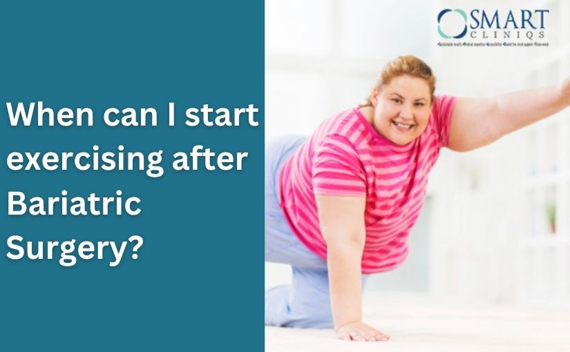

The Importance of Exercise After Bariatric Surgery: Enhancing Recovery and Long-Term Success
My Bariatric patients sometimes ask, why they need to exercise after bariatric surgery, if they have to do it anyway then what is the idea of getting the surgery done?? So, I always explain, that bariatric surgery is a tool in the overall weight loss program and a regular exercise routine will enhance its effect. Exercise should never be considered a burden, rather it should be a part of one’s regular daily activities like brushing teeth, eating meals, taking a bath, or going to work. This applies to everyone, obese or normal weight, male or female, young or elderly, and before or after weight loss surgery.Pre-operative Exercise Importance
Once you have decided to undergo bariatric surgery, mild exercise for about 20 minutes per day, 3 to 4 days a week will reduce surgical complications, assist healing, and boost post-surgery recovery. Every patient should exercise prior to surgery, more so if that is not a part of your daily routine.Components of Pre-operative Exercise
Your pre-operative exercise routine should include: Breathing exercises to improve lung capacity e.g. blowing up balloons or spirometry.- Aerobic activities include walking, swimming, or bike riding are good. Aim to gradually increase the distance each day improves your stamina, and makes surgery
- Work upon your strength, start with light weights, or improve resistance using thera-bands.
Post-operative Exercise Importance
Postoperative exercise is absolutely essential, and it is one of the most important factors that can help you achieve long-term, successful weight loss.Guidelines for Post-operative Exercise
The post-surgery exercise regimen should include:- Walking from day 1.
- Slowly and gradually Increase your walking every day. Also, start adding other aerobic exercises such as swimming and bicycle riding in consultation with your surgeon and as soon as you feel motivated.
- When your surgeon allows, start lightweight training and sit-ups. Add weights and number of reps gradually to help build muscle mass, strength, bone density, and metabolism.
Setting Goals and Belief in Success
Be it any phase of your weight loss journey, there are some definitive, basic, safe, and reliable rules to follow in respect to exercise:- Set your goals and how you want to achieve them and most importantly always believe you can do it!
- Perform exercise in combination with bariatric surgery to make the most of it.
- Always remember we all are different, everyone has dissimilar physical capacity and strength. You need to gradually increase your activity and exercise at your pace. Initially, you may face mild discomfort from exercise, which is acceptable, but if you are in pain, then hold it for a while and consult with your bariatric surgeon.
- Drink lots of water before, during, and after workout.